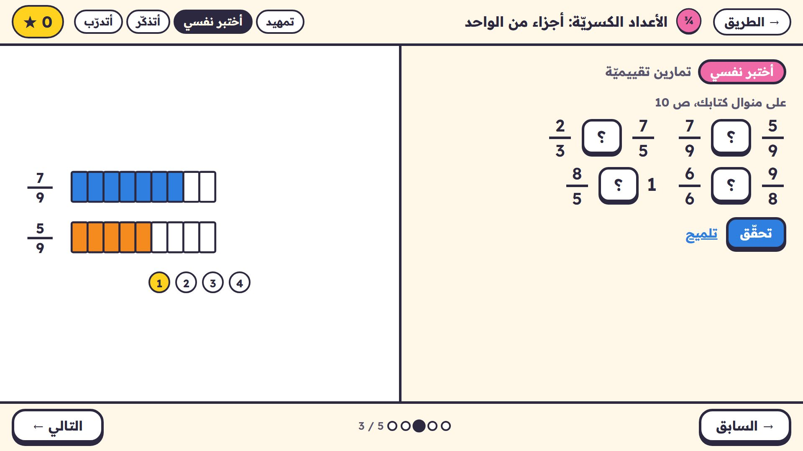
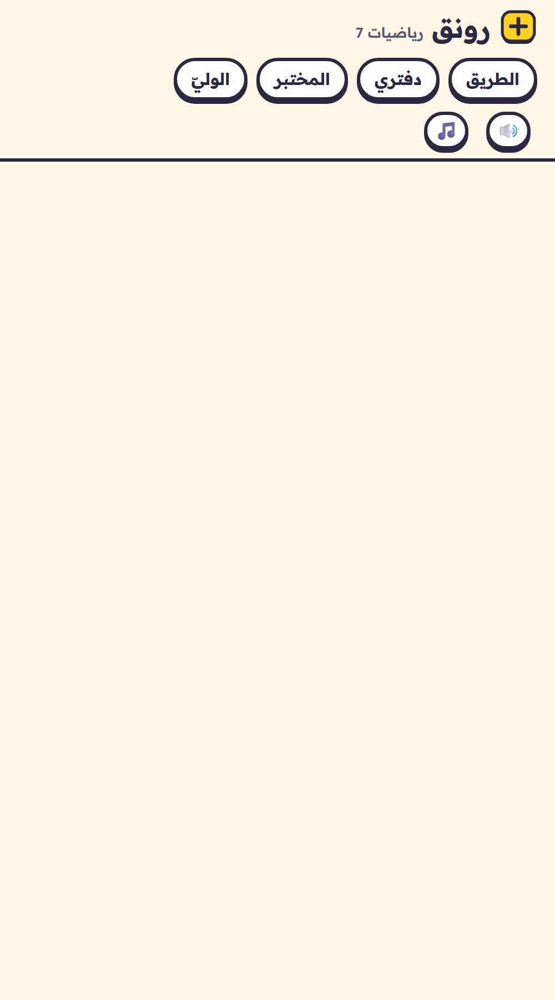

الكتاب الرسميّ نفسه. باللمس والتجريب. لكلّ طفل.
رونق للتعلّم تأخذ برنامج المدرسة كما هو، درساً درساً، وتجعله سهلاً وممتعاً وذا دلالة: الطفل يرى المفهوم ويحرّكه بيده قبل أن يقرأ قاعدته، ولكلّ تمرين رسم يُريه ما يجري فيه.

كتاب في كلّ محفظة، ودرس يُشترى خارج القسم
الكتاب المدرسيّ الرسميّ بين يدي كلّ تلميذ. لكنّه في أقسام كثيرة يُترك جانباً، ويصير الفهم الحقيقيّ بضاعة تُباع في الدروس الخصوصيّة. من لا يقدر على ثمنها يبقى وحده أمام صفحات لا يشرحها له أحد.
رونق للتعلّم جواب أب على هذا: نعيد الكتاب الرسميّ إلى مكانه، ونجعل فهمه في متناول كلّ بيت.
ترى، ثمّ تفهم، ثمّ تتمرّن
كلّ درس من الكتاب يصير «محطّة». والمحطّة لا تبدأ بالقاعدة: تبدأ بما يجعل القاعدة مفهومة حين تأتي.
تعرف الكلمات
مصطلحات الدرس، كلّ واحد برسمه. ثمّ الفكرة الكبرى، وأين نجدها في الحياة: في السوق، في المطبخ، في الهاتف.
تكتشف بيدها
لغز يثير السؤال، ثمّ نشاط تحرّكه: نقاط تُقسَّم، قافزان على خطّ الأعداد، شجرة تتفرّع. القاعدة تُرى قبل أن تُقرأ.
تتمرّن ورسمها معها
تمارين على منوال تمارين الكتاب. الخطأ يفتح سؤالاً، والتلميح يسأل ولا يعطي الحلّ، وما تعثّر يعود بعد أيّام.
على التلفاز، على الهاتف، على الحاسوب
- على التلفاز بجهاز التحكّم: الدرس على الشاشة الكبيرة، والوليّ بجانب طفله.
- على الهاتف واللوحة باللمس، بلوحة أرقام خاصّة لا تغطّي الرسم.
- على الحاسوب من المتصفّح، دون تنصيب.
- بلا اتّصال بعد أوّل زيارة. لا حساب، لا كلمة سرّ، لا إشهار.

نبدأ بمادّة واحدة، ونبنيها جيّداً
المنصّة تُبنى مع متعلّمة حقيقيّة، درساً بعد درس. ما يُنشر هنا جُرّب في بيت قبل أن يُعرض على غيره.
الرياضيّات · السنة السابعة أساسي
وثيقة التأهيل (مراجعة الابتدائي) والباب الأوّل: الأعداد الصحيحة الطبيعيّة. على برنامج تونس وبترتيب كتابه الرسميّ.
16 محطّة328 تمريناً633 رسماً17 نشاطاً تفاعليّاً ادخلالرياضيّات · السنة السابعة: الأبواب التالية
الأعداد العشريّة والكسريّة، ثمّ الهندسة. تُكتب بعد أن تُتمّ المتعلّمة الأولى الباب الأوّل ونرى ما يجب تغييره.
ما تلتزم به رونق للتعلّم
- البرنامج الرسميّ هو المنهج. لا برنامج موازٍ. ما يتعلّمه الطفل هنا هو ما يُمتحن فيه في قسمه.
- بلا إشهار. المنصّة مفتوحة وكاملة لكلّ عائلة.
- لا شيء يغادر الجهاز. تقدّم الطفل وأخطاؤه يبقيان حيث هما. لا حساب ولا تتبّع.
- الخطأ لا يُعاقَب. لا وقت يجري، ولا نقاط تُخصم، ولا ترتيب بين أطفال.
- الوليّ يرى ويرافق. لوحة تقول له أين تعثّر طفله، وتنصحه أن يسأل لا أن يشرح.
- تُغني عن الدرس الخصوصيّ ولا تصير واحداً. ربع ساعة في اليوم، لا ساعات إضافيّة.